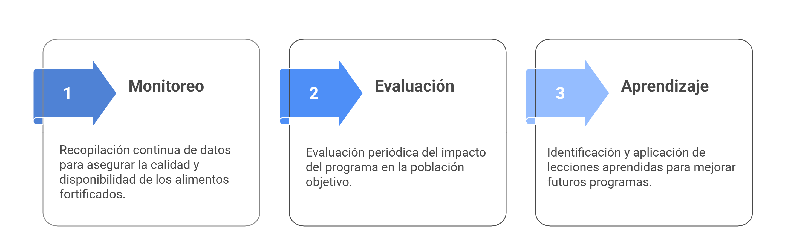
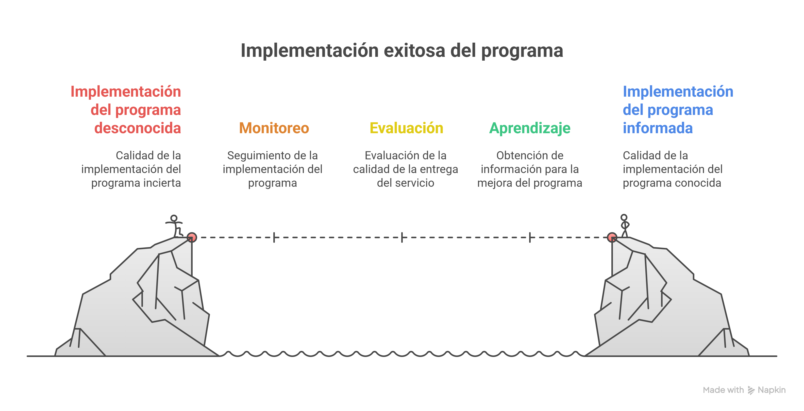
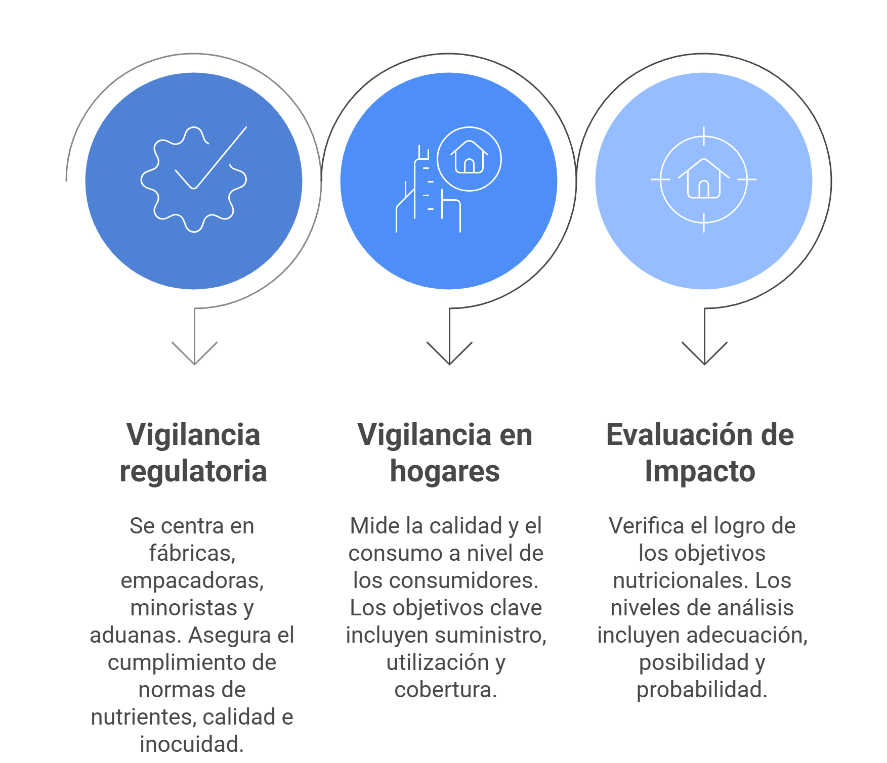
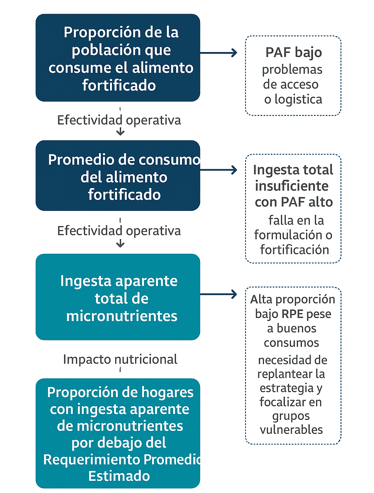

Módulo 05
Monitoreo y Evaluación de Programas de Fortificación de Alimentos
A continuación, pueden ver la presentación del módulo en formato vídeo sobre el tema propuesto.
El módulo puede ser descargado desde aquí
Sumario
Generalidades de los sistemas de monitoreo, evaluación y aprendizaje
Importacia de los sistemas de monitoreo, evaluación y aprendizaje
Componentes de un sistema de Vigilancia y Evaluación
Características del sistema WFP-LACRO basado en conjunto de indicadores seleccionados
Generalidades de los sistemas de monitoreo, evaluación y aprendizaje
Un Sistema de Monitoreo, Evaluación y Aprendizaje (MEL, por sus siglas en inglés) es un marco integral y dinámico diseñado para guiar y mejorar la gestión de programas de desarrollo.
Dentro de un sistema MEL para programas de fortificación, el Monitoreo (Vigilancia) se enfoca en la ejecución, respondiendo “¿Estamos haciendo lo que dijimos que haríamos?” La Evaluación profundiza en los resultados, abordando “¿El programa está logrando su propósito final?” Finalmente, el Aprendizaje integra estos hallazgos para mejorar continuamente, preguntándose “¿Cómo podemos hacerlo mejor la próxima vez?”

Para alcanzar las metas de los programas de fortificación, se requiere un seguimiento continuo y riguroso que permita avanzar de una implementación desconocida a una informada.

La planificación y el diseño de un programa de fortificación de alimentos requieren una evaluación exhaustiva de las necesidades nutricionales de la población. Para garantizar su éxito y sostenibilidad, es esencial que los sistemas de Monitoreo, Evaluación y Aprendizaje (MEL) se desarrollen desde el inicio del programa, idealmente durante las etapas de diseño y planificación.
Importacia de los sistemas MEL
Los sistemas MEL son cruciales porque permiten:
Determinar la calidad de la implementación del programa y la entrega de servicios.
Conocer el grado de alcance en los hogares y las personas objetivo.
Verificar el logro de los propósitos nutricionales del programa.
Proporcionar información vital a los planificadores y normativas para decidir si un programa debe continuar, ampliarse, replicarse o finalizarse.
Componentes de un sistema de vigilancia y evaluación:
Un sistema MEL general para programas de fortificación, como el descrito en las “Guías para la fortificación de alimentos con micronutrientes”, diferencia dos categorías principales de vigilancia (regulatoria y en hogares/individuos) así como una evaluación final:

El sistema de monitoreo, evaluación y aprendizaje propuesto por WFP-LACRO en detalle (basado en indicadores selecionados)
El Programa Mundial de Alimentos para América Latina y el Caribe (WFP-LACRO) ha desarrollado un sistema integral basado en indicadores clave para rastrear el progreso desde la producción hasta el consumo y el impacto nutricional.
nota: Para que estos indicadores sean útiles, se necesitan datos confiables, y el marco WFP-LACRO propone el uso de las Encuestas de Consumo y Gastos en el Hogar (HCES) como una fuente fundamental.
Los indicadores clave son:
- Proporción de la población que consume el alimento fortificado (PAF) :
Este indicador mide el porcentaje de la población objetivo que realmente consume el alimento fortificado. No basta con producirlo; hay que asegurar que llegue y se consuma. El porcentaje de cobertura real del consumo es un indicador de la efectividad operativa de todo el programa.
Fórmula
\[\text{PAF} = \left( \frac{\text{Personas que consumen AF en cantidad y frecuencia adecuada}}{\text{Población objetivo}} \right) \times 100\%\]
- Promedio de Consumo del Alimento Fortificado:
Este indicador determina la cantidad promedio del alimento fortificado que consume cada persona diariamente. Es crucial porque la efectividad no solo depende de quién consume, sino de cuánto consume.
\[\text{Promedio de Consumo} = \frac{\text{Consumo total del AF en la población objetivo}}{\text{Número de personas en la población objetivo}}\]
- Ingesta Aparente Total de Micronutrientes (MN):
Este es el indicador más completo, ya que suma las cantidades de un micronutriente obtenidas de todas las fuentes: el alimento fortificado, alimentos naturales y suplementos. Es el indicador definitivo para saber si el estado nutricional de un individuo o población está mejorando.
Fórmula
\[\text{Ingesta Aparente Total de MN} = \text{MN de alimentos naturales} + \text{MN del AF} + \text{MN de suplementos}\]
- Proporción de hogares con ingesta aparente de MN por debajo del Requerimiento Promedio Estimado:
Este indicador identifica la proporción de hogares en riesgo de deficiencia. El RPE es un valor nutricional estándar. Si la ingesta de un hogar está por debajo de este valor, hay un alto riesgo de que sus miembros tengan carencias. Este indicador permite identificar dónde el programa no está funcionando y necesita ser reforzado.
\[\text{Proporción de hogares por debajo del RPE} = \left( \frac{\text{Número de hogares con ingesta de MN } < \text{RPE}}{\text{Número total de hogares evaluados}} \right) \times 100\%\]
utilidad y relación entre los indicadores
Estos cuatro indicadores forman un sistema MEL integrado, no mediciones aisladas. Los dos primeros —proporción de la población que consume (PAF) y promedio de consumo— reflejan la efectividad operativa del programa, mientras que la ingesta aparente total de micronutrientes y la proporción de hogares por debajo del RPE miden su impacto nutricional real.
La clave es comprender que una alta cobertura o un buen consumo promedio no garantizan mejoras en salud. Un programa puede distribuir eficazmente el alimento, pero si la dieta es deficiente o la dosificación inadecuada, la carencia persistirá.
El valor del sistema está en su capacidad de diagnóstico:
- PAF bajo → problema de acceso o logística.
- Ingesta total insuficiente con PAF alto → falla en la formulación o fortificación.
- Alta proporción bajo RPE pese a buenos consumos → necesidad de replantear la estrategia y focalizar en grupos vulnerables.
En conjunto, estos indicadores son piezas de un mismo rompecabezas: el éxito no se mide solo por la cobertura o la producción, sino por el bienestar nutricional efectivo de la población.

Los principales desafíos para implementar estos sistemas incluyen:
La disponibilidad de datos de alta calidad (como las HCES).
La capacidad técnica para analizar estos datos de manera compleja.
La coordinación entre los diferentes actores (gobierno, sector privado, academia)
En el módulo 06 nos adentraremos en detalles en la encuestas HCES, un elemento crítico para la calidad del proceso.
Biblografía
- Allen, Lindsay H, Bruno De Benoist, Omar Dary, Richard Hurrell, and Organización Mundial de la Salud. 2017. Guías para la fortificación de alimentos con micronutrientes. Ginebra: Organización Mundial de la Salud. https://iris.who.int/handle/10665/255541.